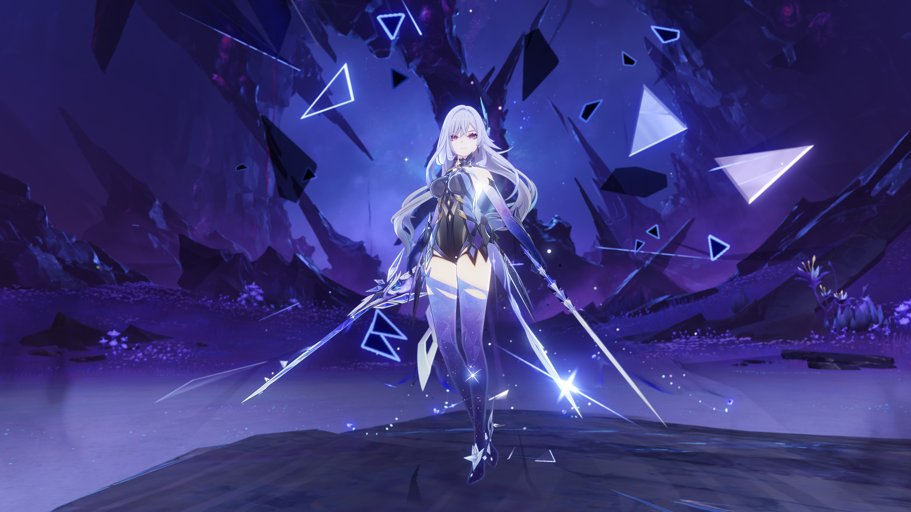

Guide to Skirk's Best Freeze Team in Genshin Impact
Do you have the right characters built but still struggle to hit high damage? Have you leveled up each character and still struggle with bosses? Are your artifacts perfect and yet the team isn't harmonizing? How are your talents, are they leveled up? Are you checking all of these boxes and yet your characters seem broken or weak? Fret no more, this guide is just for you! In this guide, we will go over her best supporting characters one by one, along with weapons and recommended talents and artifacts so that your team's elemental reaction work beautifully together and that Skirk is doing the damage she was built to do.
What Are The Best Characters For Her Team?
Skirk's best composition includes:
- Skirk
- Furina
- Shenhe
- Escoffier
What Are Some Other Characters We Could Use Instead?
If you missed some of these character's banners, don't panic. There are so many other hydro or cyro characters we could use instead! For example, if you are an older player, you could substitute Escoffier or Shenhe for Ganyu. Citlali, Ayaka, or even some of your 4 star characters such as Kaeya, Layla, or Chongyun could also work. If you need a replacement for Furina, Moana or Yelan will do. If you need to use a 4 star, Xingqiu is your best bet! You could use Barbara, but I wouldn't recommend it.
